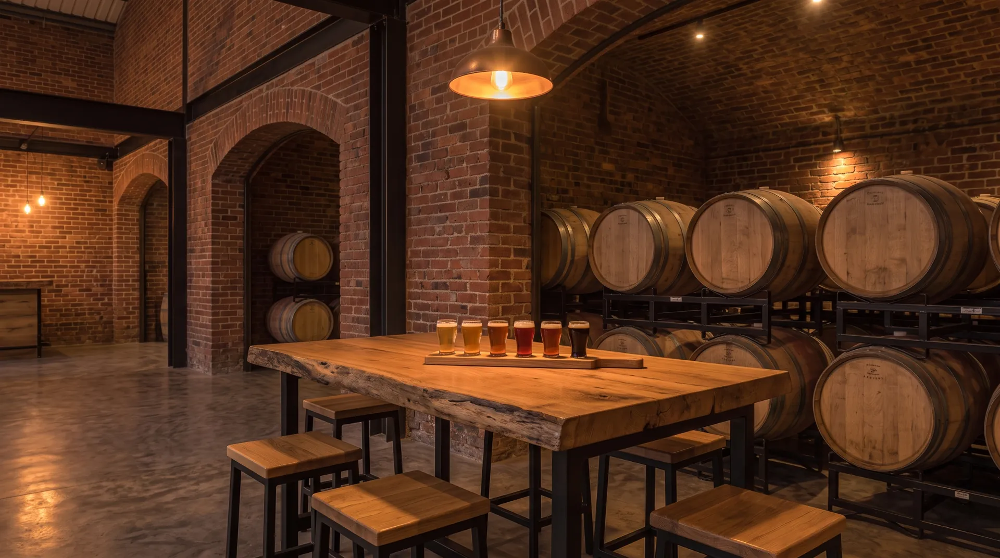

Sin intermediarios entre el tanque y tu vaso. Por eso aquí la cerveza sabe como debe saber.
De la casa
Seis fijas en la barra
Las otras 18 rotan cada semana. Estas no se mueven.
-
Patio Rubia
Helles lager
Limpia y ligera. La que pides primero mientras decides.
- Alcohol
- 4,8 %
- IBU
- 19
-
Grifo 12
West Coast IPA
Pino, pomelo y un amargor seco que se queda.
- Alcohol
- 6,7 %
- IBU
- 62
-
Ladrillo
Irish red ale
Caramelo tostado, cuerpo medio y final seco.
- Alcohol
- 5,3 %
- IBU
- 27
-
Trigo Alto
Hefeweizen
Plátano, clavo y una espuma que no se va.
- Alcohol
- 5,1 %
- IBU
- 13
-
Turno de Noche
Oatmeal stout
Café, cacao y avena. Cremosa sin pesar.
- Alcohol
- 6,1 %
- IBU
- 34
-
Nueve Meses
Imperial stout en barrica
Nueve meses en barrica de vino tinto. Para compartir.
- Alcohol
- 10,4 %
- IBU
- 48

Experiencias
Más que una ronda
-
Cata guiada
Seis cervezas de la casa con quien las hace. 60 minutos.
21 €por persona
-
Visita a la fábrica y cata
Entras detrás del vidrio, pruebas del tanque y terminas en la mesa de cata. 90 minutos.
29 €por persona
-
Barril para tu grupo
20 litros de la cerveza que elijas y mesa reservada para hasta 12 personas.
189 €por grupo
Cómo funciona
Tres pasos hasta la primera pinta
- 1
Reserva
Elige día y cuántos sois. Te confirmamos al momento por email.
- 2
Llega
Te esperamos en la mesa. Si vienes a una cata, empieza a la hora en punto.
- 3
Brinda
Pide en la barra o en la mesa. Si no sabes qué elegir, te damos a probar.
Preguntas
Lo que nos preguntan antes de venir
¿Hace falta reservar?
Para grupos de hasta 5 personas no. Para 6 o más, para las catas y para el barril, sí.
¿Puedo cancelar la reserva?
Sí, gratis hasta 2 horas antes. Contesta al email de confirmación y la liberamos.
¿Tienen cerveza sin alcohol?
Sí. Siempre hay una sin alcohol de la casa en grifo, además de refrescos artesanales y kombucha.
¿Hay comida?
Una carta corta pensada para acompañar: tablas, bocadillos y algo dulce. Cocina abierta hasta las 23:30.
¿Puedo ir con niños?
Sí, hasta las 21:00. Las catas y la visita a la fábrica son solo para mayores de edad.
¿Aceptan perros?
En el patio sí, y les ponemos agua. Dentro del salón no, por la fábrica.
¿Puedo llevarme cerveza a casa?
Rellenamos growlers de 1 y 2 litros con cualquier cerveza de los grifos. El envase lo puedes traer o comprarlo aquí.
Reservar
La próxima ronda la sirve el tanque
Martes a domingo, de 17:00 a 01:00.